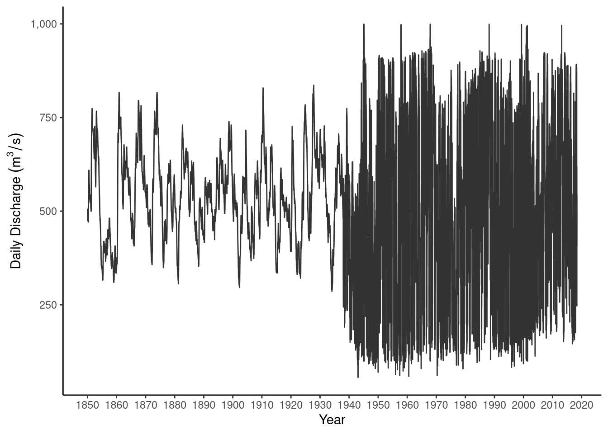
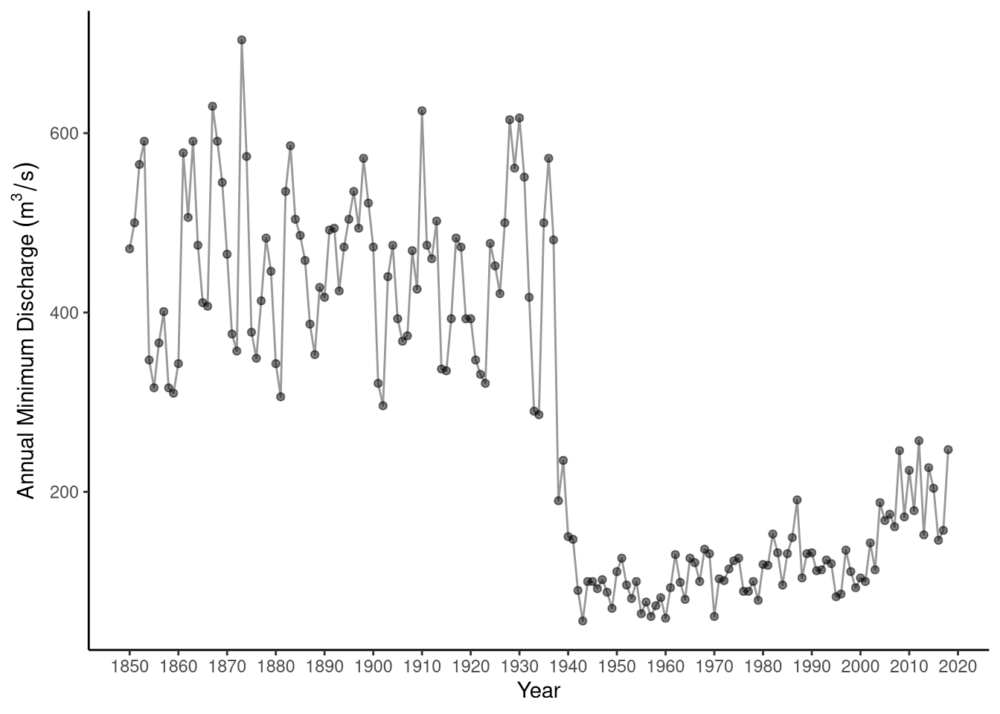
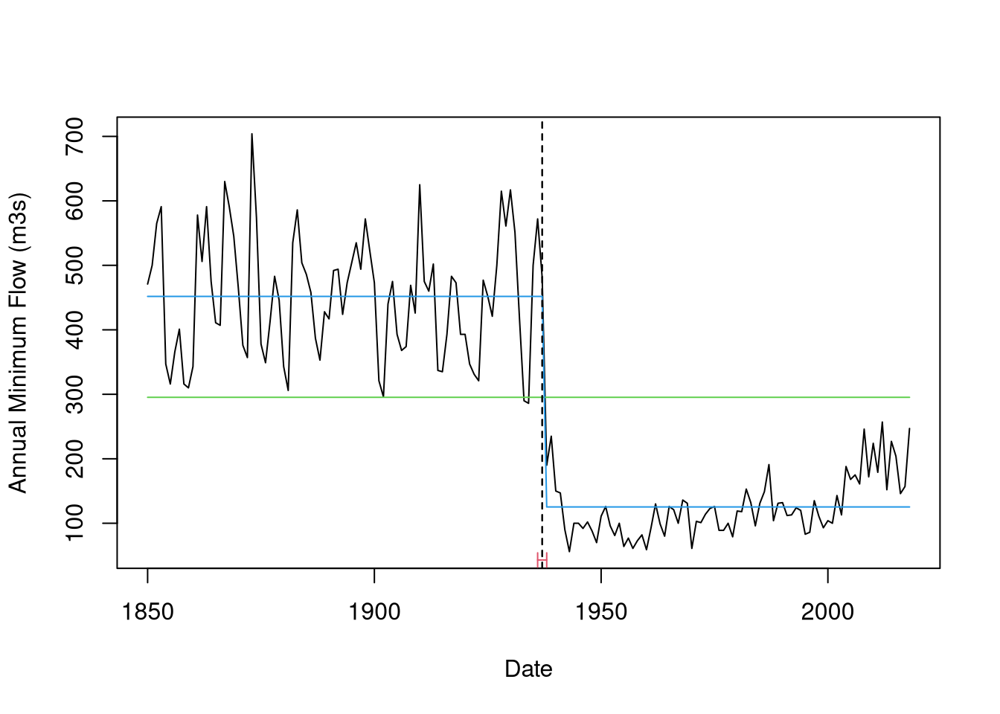

In previous worked examples, we used a subset of Göta River discharges, processed to produce the annual minimum flow cut either to the period before 1940 or after 1940. Plotting the raw daily data from the earliest records (Fig. 7.12), we see an abrupt and obvious structural change around 1940. There is clearly a change in variance and a change in temporal autocorrelation (flow persistence/noisiness).
library(tidyverse)
library(hydroDrought)
library(lubridate)
library(strucchange)
library(Hmisc)
### Filter to the rivers and create columns for dates
flow_df <- international %>%
filter(river == "Gota") %>%
select(river, data) %>%
unnest(cols = data) %>%
mutate(
year = year(time),
jdate = yday(time)
) %>%
print()## # A tibble: 61,498 x 5
## river time discharge year jdate
## <chr> <date> <dbl> <dbl> <dbl>
## 1 Gota 1850-01-01 506 1850 1
## 2 Gota 1850-01-02 506 1850 2
## 3 Gota 1850-01-03 502 1850 3
## 4 Gota 1850-01-04 502 1850 4
## 5 Gota 1850-01-05 502 1850 5
## 6 Gota 1850-01-06 502 1850 6
## 7 Gota 1850-01-07 496 1850 7
## 8 Gota 1850-01-08 496 1850 8
## 9 Gota 1850-01-09 496 1850 9
## 10 Gota 1850-01-10 496 1850 10
## # … with 61,488 more rowsFigure 7.12: Daily discharge at the Gota River station demonstrating a visually clear structural change.
To avoid this temporal autocorrelation issue, let us focus again on the annual minimum flow for the entire time series. We now see a severe decrease in flow from 300-600 m3/s prior to the 1930s and 50-200 m3/s after 1940 (Fig. 7.13). Examples are not typically this clear. We can apply the Chow F-test to identify the change point.
### Group by year and river and then calculate min annual flow
flow_annual <- flow_df %>%
group_by(river, year) %>%
summarise(min_m3s = min(discharge, na.rm=TRUE), .groups = "drop_last") %>%
print() %>%
ungroup()## # A tibble: 169 x 3
## # Groups: river [1]
## river year min_m3s
## <chr> <dbl> <dbl>
## 1 Gota 1850 471
## 2 Gota 1851 500
## 3 Gota 1852 565
## 4 Gota 1853 591
## 5 Gota 1854 347
## 6 Gota 1855 316
## 7 Gota 1856 366
## 8 Gota 1857 401
## 9 Gota 1858 316
## 10 Gota 1859 310
## # … with 159 more rowsFigure 7.13: Annual minimum discharge at the Gota River station for the full period (1850-present).
### Convert the data to a regularly spaced annual time series
first_year <- min(flow_annual$year, na.rm=TRUE)
flow_annual_ts <- flow_annual %>%
complete(year=full_seq(year,1)) %>% ### Make sure all years are included using the complete command
ts(frequency=1, start=first_year)
### Run the Chow F test for a single breakpoint, assuming there is no trend in the data (ie intercept only)
### The equation therefore looks like min_m3s is a function only of an intercept (designated by a 1)
f_test_int_only <- Fstats(min_m3s ~ 1, data=flow_annual_ts)
sctest(f_test_int_only)##
## supF test
##
## data: f_test_int_only
## sup.F = 789.79, p-value < 2.2e-16bp_int_only <- breakpoints(f_test_int_only)
summary(bp_int_only)##
## Optimal 2-segment partition:
##
## Call:
## breakpoints.Fstats(obj = f_test_int_only)
##
## Breakpoints at observation number:
## 88
##
## Corresponding to breakdates:
## 1937
##
## RSS: 951054.5Fig. 7.14 shows the null model in green, assuming the data come from the same distribution, and the alternative model in blue, assuming a sudden change point. In this example, we choose to constrain the model to assume there is a constant mean with no trends, i.e. b1=b2a=b2b=0. Using a single breakpoint, we see that the F-test statistic is maximized with a breakpoint in 1937. This breakpoint is highly statistically significant, suggesting there was a detectable structural change during this year. The 95% confidence interval around the location of this breakpoint is between 1936 and 1938, also giving us strong confidence in the location of this breakpoint.
### Run for multiple potential breakpoints
all_bp_int_only <- breakpoints(min_m3s ~ 1, data=flow_annual_ts)
summary(all_bp_int_only)##
## Optimal (m+1)-segment partition:
##
## Call:
## breakpoints.formula(formula = min_m3s ~ 1, data = flow_annual_ts)
##
## Breakpoints at observation number:
##
## m = 1 88
## m = 2 88 135
## m = 3 51 88 135
## m = 4 51 88 115 144
## m = 5 25 51 88 115 144
##
## Corresponding to breakdates:
##
## m = 1 1937
## m = 2 1937 1984
## m = 3 1900 1937 1984
## m = 4 1900 1937 1964 1993
## m = 5 1874 1900 1937 1964 1993
##
## Fit:
##
## m 0 1 2 3 4 5
## RSS 5448868 951054 908267 894278 891014 888699
## BIC 2244 1960 1962 1970 1979 1989### Best solution should minimize BIC (Bayesian Information Criterion)
#plot(all_bp_int_only)
### Calculate a confidence interval around this
ci_int_only <- confint(all_bp_int_only)
ci_int_only##
## Confidence intervals for breakpoints
## of optimal 2-segment partition:
##
## Call:
## confint.breakpointsfull(object = all_bp_int_only)
##
## Breakpoints at observation number:
## 2.5 % breakpoints 97.5 %
## 1 87 88 89
##
## Corresponding to breakdates:
## 2.5 % breakpoints 97.5 %
## 1 1936 1937 1938### Assume this breakpoint and plot the null hypothesis model (no breakpoint, intercept only) vs the alternative (breakpoint, intercept only)
### Fit both models
fm0 <- lm(min_m3s ~ 1, data=flow_annual_ts )
fm1 <- lm(min_m3s ~ breakfactor(all_bp_int_only, breaks = 1) + 1, data=flow_annual_ts )Figure 7.14: Candidate models for Chow Breakpoint Test. Null model (no breakpoint) shown in green, while the alternative model (single breakpoint) is shown in blue. Location of the breakpoint shown with a dashed line and a 95% confidence interval in red.
To test the possibility of additional breakpoints, we introduced more complex models with 2-5 breakpoints. However, adding these breaks did not significantly decrease the model residuals, pointing to a single breakpoint.
As with all statistical findings, it is important to validate results with real-world understanding, checking whether the findings make physical sense. In this case, we can check the historical record during the period 1936-1938 to try and identify what physical processes could produce this sudden decrease in annual minimum flows on the Göta River. The Lake Vanern decree was signed in 1937, which codified water management on Lake Vanern, the headwaters of Göta River, to prevent severe flooding through dam control. This more active reservoir management decreased annual low flows and peak flows.